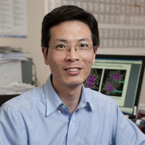

Eberly Family Distinguished Chair of Science, Penn State University
Rongchao Jin is a Professor of Chemistry at Penn State University (2026–present). He received his B.S. in Chemical Physics from the University of Science and Technology of China (USTC) in 1995 and his M.S. in Catalysis from the Chinese Academy of Sciences / Dalian Institute of Chemical Physics in 1998, followed by a Ph.D. in Chemistry from Northwestern University in 2003. After postdoctoral research at the James Franck Institute of the University of Chicago (2003–2006), he joined Carnegie Mellon University as Assistant Professor of Chemistry in 2006, was promoted to Associate Professor in 2012 and to Professor in 2015, before moving his laboratory to Penn State in 2026.
His research involves the intertwining of synthetic inorganic chemistry with emission spectroscopy and ultrafast molecular dynamics of atomically precise metal nanoclusters (APMNCs). Currently his research focuses on the near-infrared emission and utilisation of APMNCs and understanding the underlying mechanism for photonic applications of the future. Prof. Jin's research transformed the field of nanoclusters by understanding how the structure of metals with sizes between molecules and nanoparticles can lead to new emergent phenomena.
| Years | Position | Institution |
|---|---|---|
| 2026–present | Professor of Chemistry | Penn State University |
| 2015–2026 | Professor of Chemistry | Carnegie Mellon University |
| 2012–2015 | Associate Professor of Chemistry | Carnegie Mellon University |
| 2006–2012 | Assistant Professor of Chemistry | Carnegie Mellon University |
| 2003–2006 | Research Associate, James Franck Institute | University of Chicago |
| 2003 | Ph.D. in Chemistry | Northwestern University |
| 1998 | M.S. in Catalysis | Chinese Academy of Sciences / Dalian Institute of Chemical Physics |
| 1995 | B.S. in Chemical Physics | University of Science and Technology of China (USTC) |
Eberly Family Distinguished Chair in Science, Department of Chemistry, Penn State University
Associate Editor, Nanoscale
International Precious Metals Institute (IPMI) Advisor Award
Asian Rising Star Award - Federation of Asian Chemical Societies
Camille Dreyfus Teacher-Scholar Award
"[Talk title]" — [Conference or seminar series], [Institution], [City].
"[Talk title]" — [Conference or seminar series], [Institution], [City].
Invited lecture, [Department seminar], [University], [City].
Keynote lecture, [Conference name], [City, Country].
"[Talk title]" — [Symposium], [Institution], [City].